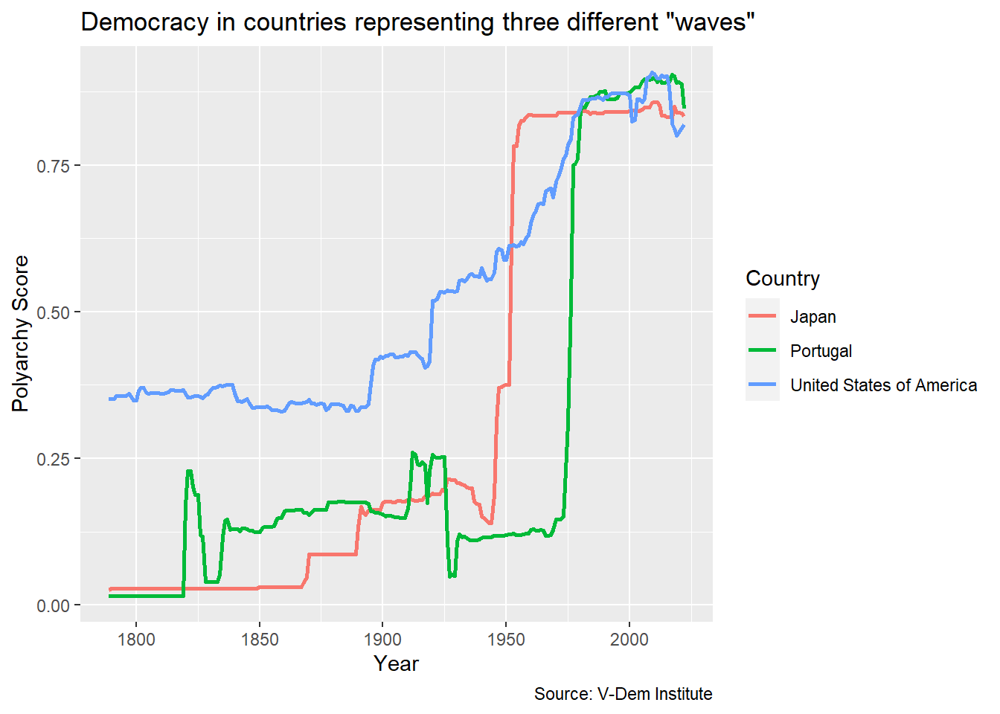
Accessibility and Color Schemes
Color Blindness
- Color Vision Deficiency (CVD) or color blindness affects 8 percent of men and 1 in 200 women
- There are different types of CVD but most common is red-green color blindness
- Therefore, don’t include red and green in the same chart!
- Look for color blind safe palettes
Last Week’s Line Chart
Last Week’s Line Chart
Create last week’s line chart and save as an object…
dem_waves_ctrs <- read_csv("https://raw.githubusercontent.com/eteitelbaum/dataviz-fall-2023/main/slides/data/dem_waves_ctrs.csv")
dem_waves_chart <- ggplot(dem_waves_ctrs, aes(x = year, y = polyarchy, color = country)) +
geom_line(linewidth = 1) + # our geom is a line with a width of 1
labs(
x = "Year",
y = "Polyarchy Score",
title = 'Democracy in countries representing three different "waves"',
caption = "Source: V-Dem Institute",
color = "Country" # make title of legend to upper case
)02:00
CVD Plot
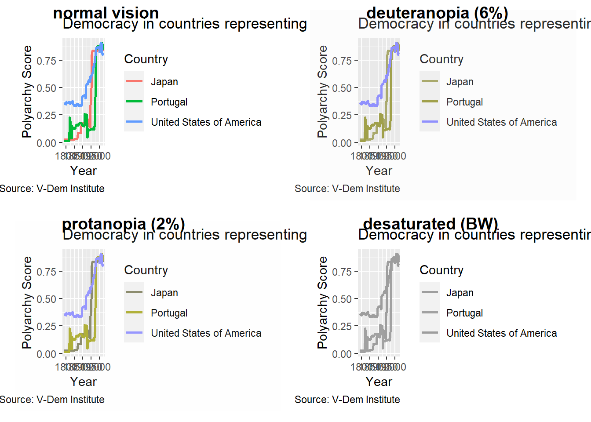
CVD Plot
Call CVD plot from the colorBlindness package. CVD stands for “color vision deficiency.”
library(colorBlindness)
cvdPlot(dem_waves_chart)CVD Plot
Click on little image to expand view…

Your Turn!
- Take your
dem_waves_chartobject and runcvdPlot()on it - Expand the window and have a good look
- Which group would have the toughest time reading this graph?
02:00
Create Your Own Color Scheme
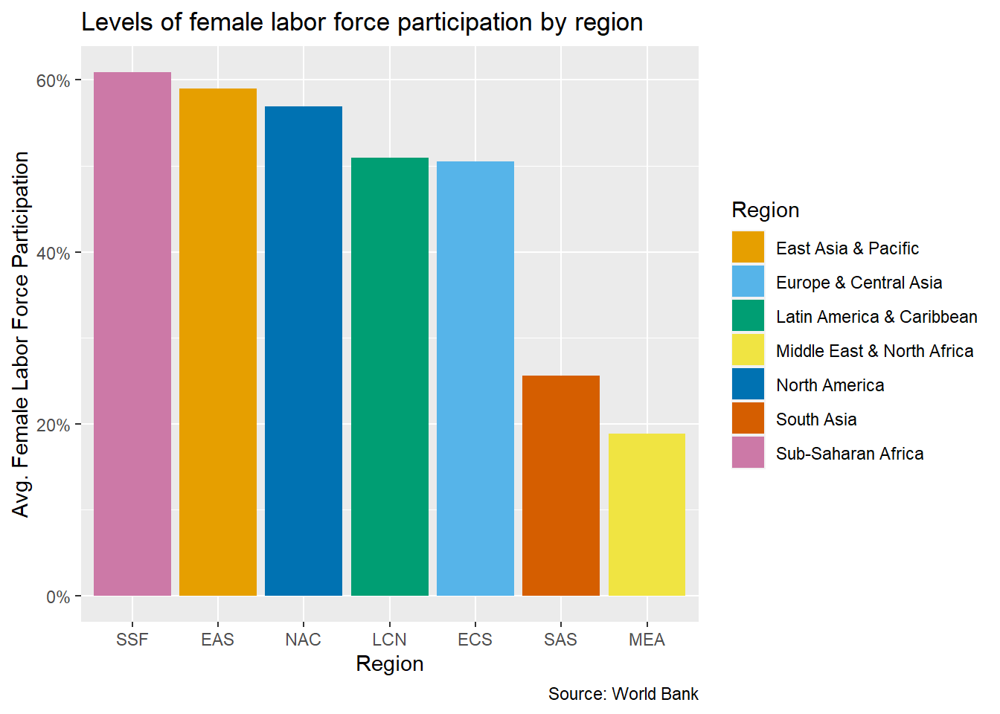
Create Your Own Color Scheme
cb_palette <- c("#E69F00", "#56B4E9", "#009E73", "#F0E442", "#0072B2", "#D55E00", "#CC79A7")
flfp_region <- ggplot(flfp_gdp_regions, aes(x = reorder(iso3c, -flfp), y = flfp, fill = region)) +
geom_col() +
scale_y_continuous(labels = scales::label_percent(scale = 1)) +
labs(
x = "Region",
y = "Avg. Female Labor Force Participation",
title = "Levels of female labor force participation by region",
fill = "Region",
caption = "Source: World Bank"
)
flfp_region + scale_fill_manual(values = cb_palette)Create Your Own Color Scheme
cb_palette <- c("#E69F00", "#56B4E9", "#009E73", "#F0E442", "#0072B2", "#D55E00", "#CC79A7")
flfp_region <- ggplot(flfp_gdp_regions, aes(x = reorder(iso3c, -flfp), y = flfp, fill = region)) +
geom_col() +
scale_y_continuous(labels = scales::label_percent(scale = 1)) +
labs(
x = "Region",
y = "Avg. Female Labor Force Participation",
title = "Levels of female labor force participation by region",
fill = "Region",
caption = "Source: World Bank"
)
flfp_region + scale_fill_manual(values = cb_palette)Your Turn!
- Go to Module 2.2 on the course website
- Do the setup steps
- Reproduce the column chart of FLFP with the custom color scheme
- Try changing one of the hex codes
- Now run
cvdPlot()on the plot object to make sure it is color-blind friendly - Now try a Barbie theme or GW colors
10:00
Using a Color Palette
- There are many color palettes
- Viridis scales look cool and are accessible
- ColorBrewer has many scales some of which are color-blind safe
- The paletteer package aims to be a comprehensive collection of color palettes
Viridis
flfp_region + scale_fill_viridis_d()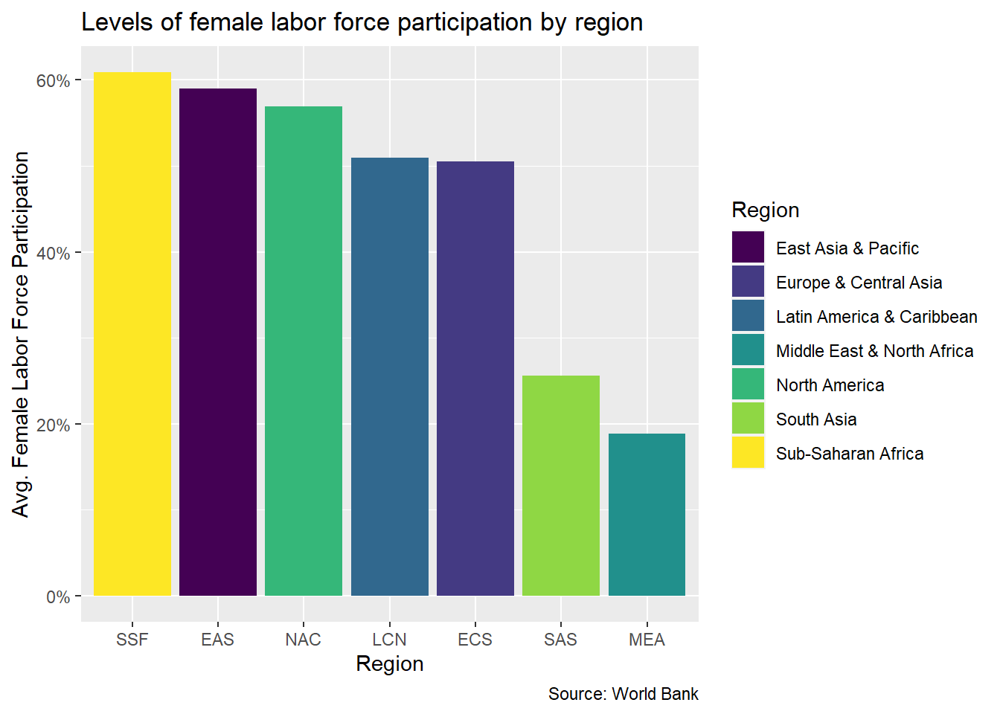
Viridis
flfp_region <-flfp_region + scale_fill_viridis_d()
cvdPlot(flfp_region)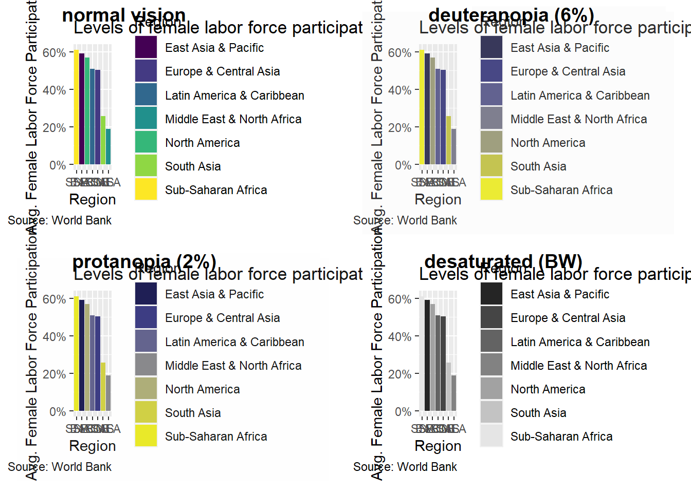
ColorBrewer
flfp_region + scale_fill_brewer(palette = "YlGn")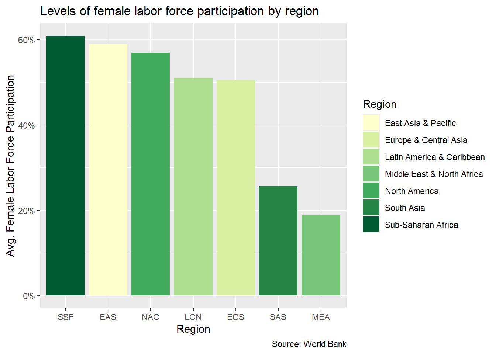
ColorBrewer
flfp_region <- flfp_region + scale_fill_brewer(palette = "YlGn")
cvdPlot(flfp_region)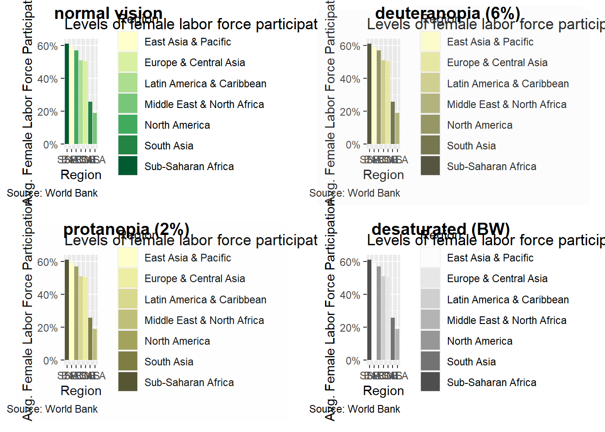
Paletteer
library(paletteer)
flfp_region + scale_fill_paletteer_d("rcartocolor::Temps")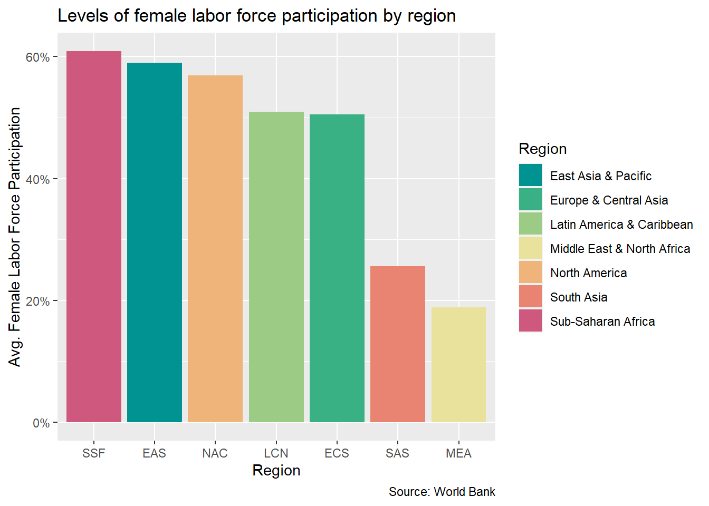
Paletteer
Not all palettes are color-blind safe…
flfp_region <- flfp_region + scale_fill_paletteer_d("rcartocolor::Temps")
cvdPlot(flfp_region)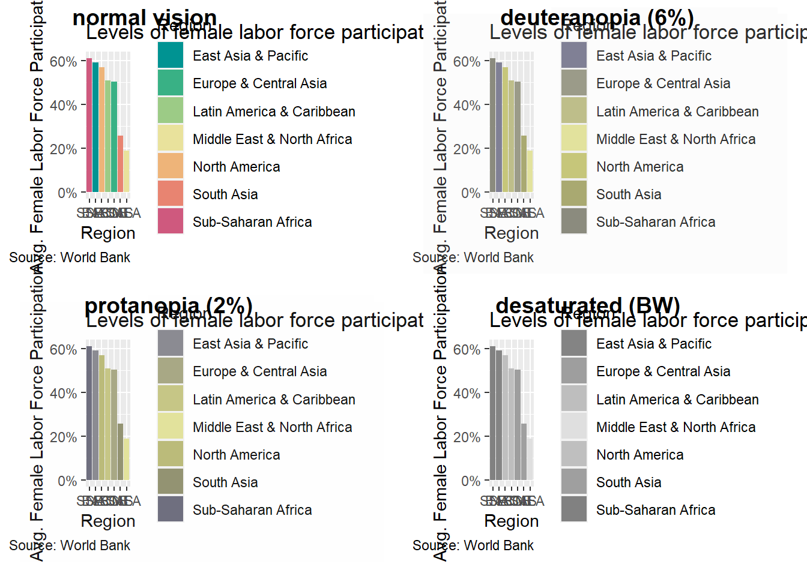
Paletteer
library(paletteer)
flfp_region + scale_fill_paletteer_d("beyonce::X1") 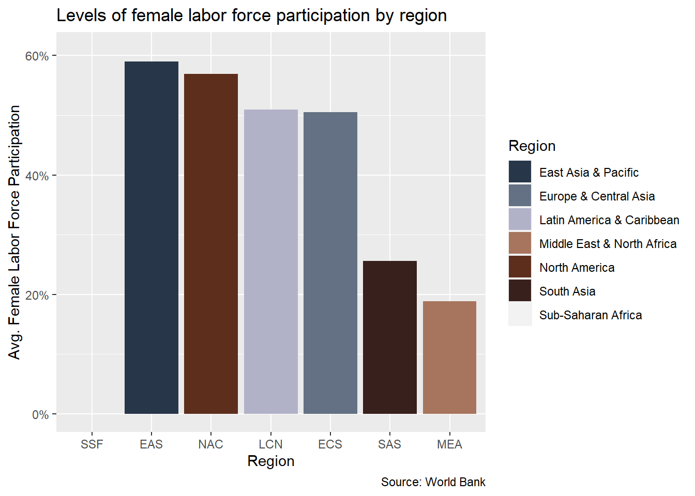
And some many not have enough colors for your chart…
flfp_region + scale_fill_paletteer_d("beyonce::X1")
Your Turn
- Try one of the color palettes packages we just discussed
- Google the reference documents for details on schemes
- For paletteer, check out this paletteer gallery
- For ColorBrewer, check out this selector tool
- A full list of viridis schemes is here
10:00
Scaling for Scatter Plots
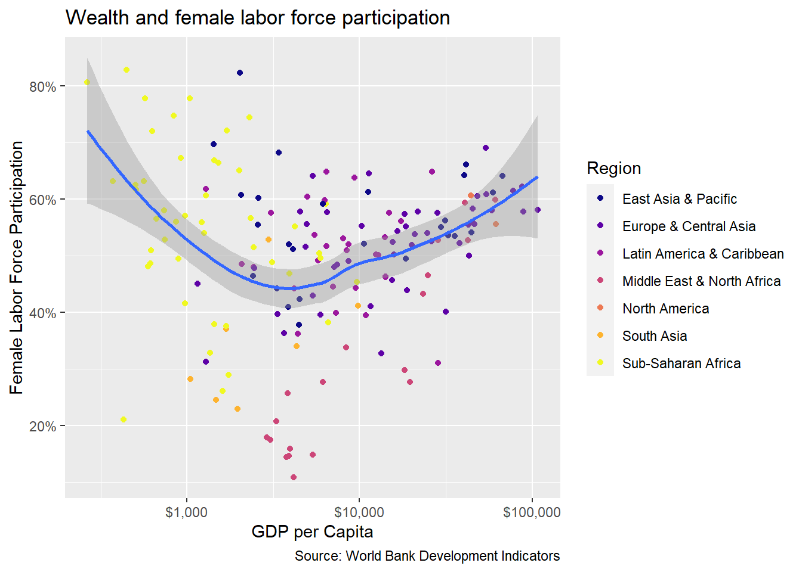
Scaling for Scatter Plots
Use scale_color_viridis_d instead of scale_fill_viridis_d.
wealth_flfp <- ggplot(flfp_gdp, aes(x = gdp_pc, y = flfp)) +
geom_point(aes(color = region)) + # color points by region
geom_smooth(method = "loess", linewidth = 1) + # make the line a loess curve
scale_x_log10(labels = scales::label_dollar()) + # stretch axis, add '$' format
scale_y_continuous(labels = scales::label_percent(scale = 1)) + # add % label
labs(
x= "GDP per Capita", # x-axis title
y = "Female Labor Force Participation", # y-axis title
title = "Wealth and female labor force participation", # plot title
caption = "Source: World Bank Development Indicators", # caption
color = "Region" # legend title
)
wealth_flfp + scale_color_viridis_d(option = "plasma")Scaling for Scatter Plots
Use the end argument to darken the colors
wealth_flfp + scale_color_viridis_d(option = "plasma", end = .7)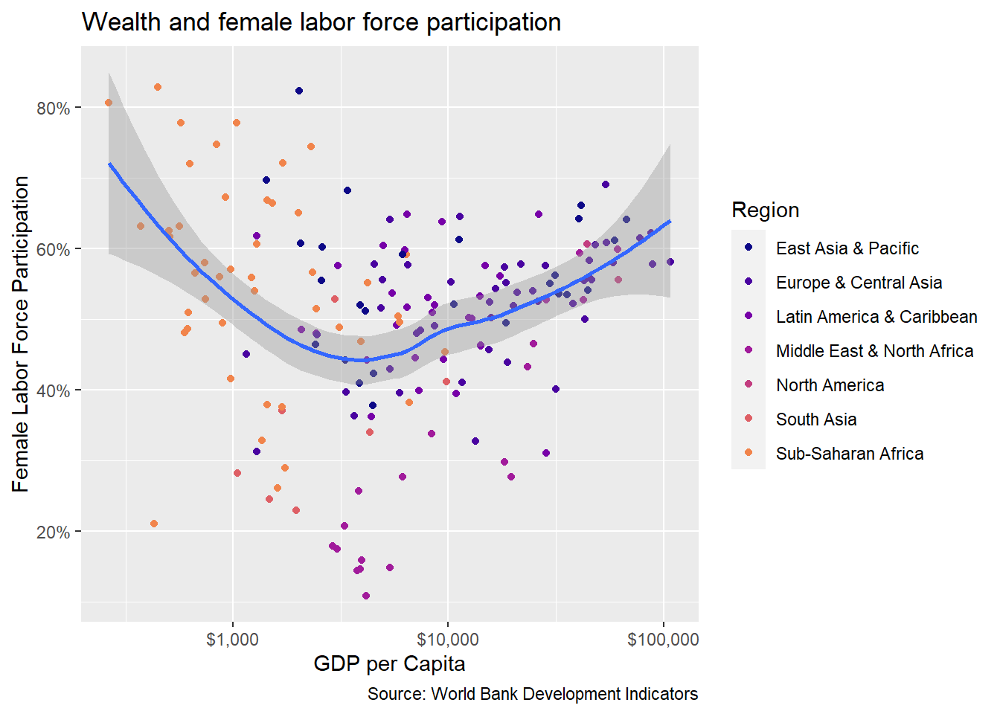
Scaling for Scatter Plots
Use the direction argument to flip the color scale…
wealth_flfp + scale_color_viridis_d(option = "plasma", direction = -1)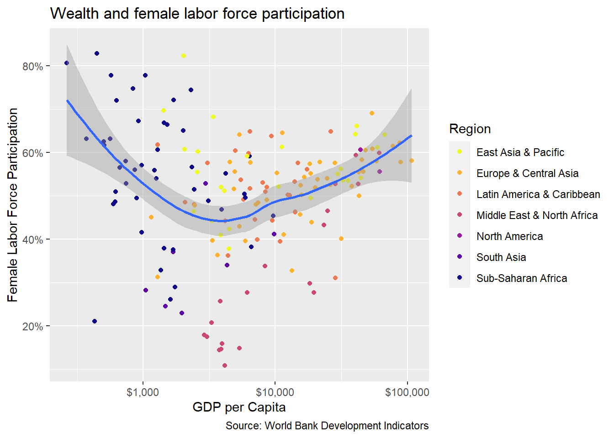
Your Turn!
- Try using one of the color schemes on a scatter plot
- Use
scale_color_instead ofscale_fill_ - Play around with
endanddirectionarguments inviridis
10:00